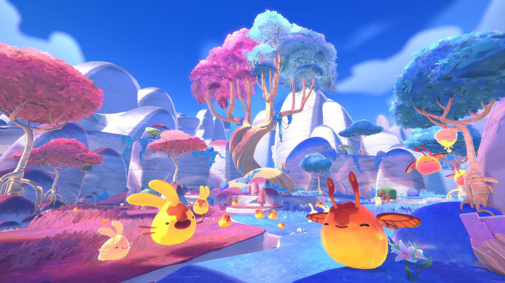

The Adventure Continues
Slime Rancher 2 is a sequel to the award-winning, smash-hit original that has been enjoyed by over 15 million fans worldwide. Continue the adventures of Beatrix LeBeau as she journeys to Rainbow Island, a mysterious land brimming with ancient technology, unknown natural resources, and an avalanche of wiggling, jiggling, new slimes to discover.

Slime Rancher 2 Media Page
Grab your vacpack and set sail across the Slime Sea for a wiggly new adventure in Slime Rancher 2, coming in 2022!
Join Viktor Humphries as he reluctantly introduces you to the world of Slime Rancher 2.
Slime Rancher 2 is now available in Early Access on PC and Game Preview on Xbox Series X|S